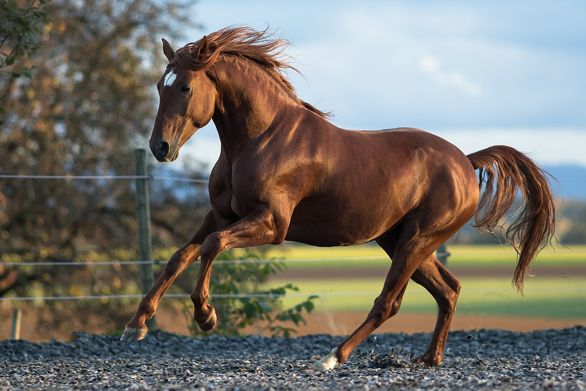
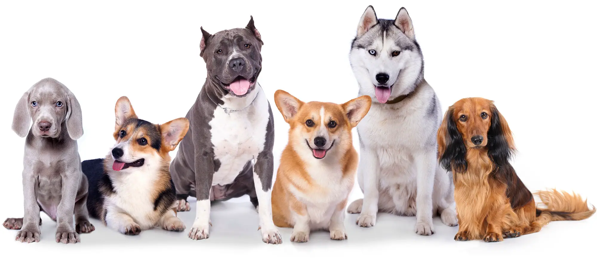
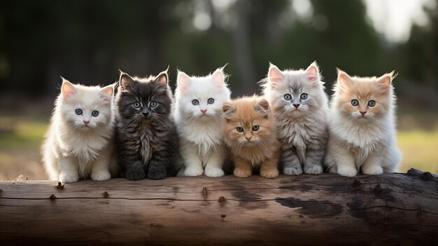

Horses are adapted to run, allowing them to quickly escape predators, and possess an excellent sense of
balance and a strong fight-or-flight response. Related to this need to flee from predators in the wild
is an unusual trait: horses are able to sleep both standing up and lying down, with younger horses tending to
sleep significantly more than adults. Female horses, called mares, carry their young for
approximately 11 months and a young horse, called a foal, can stand and run shortly following birth. Most
domesticated horses begin training under a saddle or in a harness between the ages of two and four. They reach
full adult development by age five, and have an average lifespan of between 25 and 30 years.
Dogs

The dog has been selectively bred over millennia for various behaviors, sensory capabilities, and
physical attributes. Dog breeds vary widely in shape, size, and color. They perform many roles for humans,
such as hunting, herding, pulling loads, protection, assisting police and the military, companionship,
therapy, and aiding disabled people. Over the millennia, dogs became uniquely adapted to human behavior, and the
human canine bond has been a topic of frequent study. This influence on human society has given them
the sobriquet of "man's best friend".
Cats

The cat (Felis catus), commonly referred to as the domestic cat or house cat, is the only domesticated
species in the family Felidae. Recent advances in archaeology and genetics have shown that the
domestication of the cat occurred in the Near East around 7500 BC. It is commonly kept as a house pet and farm
cat, but also ranges freely as a feral cat avoiding human contact. It is valued by humans for companionship and
its ability to kill vermin. Because of its retractable claws it is adapted to killing small prey like mice
and rats. It has a strong flexible body, quick reflexes, sharp teeth, and its night vision and sense of
smell are well developed. It is a social species, but a solitary hunter and a crepuscular predator. Cat
communication includes vocalizations like meowing, purring, trilling, hissing, growling, and grunting as
well as cat body language. It can hear sounds too faint or too high in frequency for human ears, such as
those made by small mammals. It also secretes and perceives pheromones.